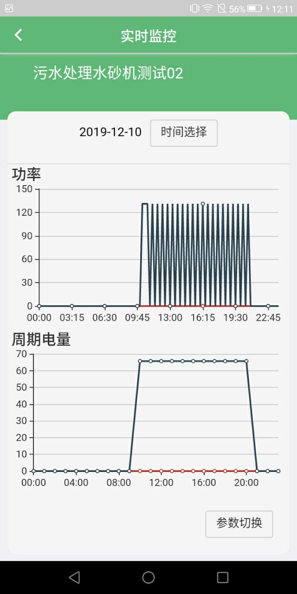

平台安装前准备：首先支持安卓版本8.0以上。
1.登录
输入用户名、密码，点击“登录”按钮，如果用户名、密码不正确则提示用户输入正确的用户名密码；如果用户名、密码正确即可成功登录手机系统。
2.首页
对当前登录账号所管理的企业数、设备数、监测点数、治污设施情况以及停产限产执行情况，并将AQI/错峰生产对比分析、今日用电量、各行业/各区域异常企业占比通过图表的形式展示。
3.总体监控
显示所有企业和在地图上的位置。通过点击地图上企业的小红点可以显示当前企业的企业名称。地图下列的的企业列表显示的是每个企业的详细信息以及检测点的信息。 点击“产污设施监控”按钮：跳转到监测点信息的页面，显示产污治污点的数量，可以查看某个监测点的详细信息，通过点击“监控数据”的按钮：跳转到监控数据显示的页面，可以查看到当天选中监测点的功率和周期电量，可以点击“时间选择”按钮用户选择某个日期的监测点详细信息，通过点击下方的“参数切换”按钮：可以查看6个参数的供用户选择，查看数据的变化。 通过点击总体监控的“企业监控”按钮：可以查看该企业的信息，如果该企业没有企业数据，就会给提示说明。
4.故障
该模块显示监管各企业设备故障详情，企业故障类型查看等情况的查询，支持相关运行数据、异常详细的查询。点击右上角的搜索按钮，可以根据上面的搜索条件可以进行针对性的筛选。通过点击右边的按钮，选择对应的日期和类型。 点击“运行数据”按钮，可以查看故障企业下监测点的详细信息点击“查看详情”按钮，可以查看该企业信息和监测点的信息，以及异常原因等各种信息情况。

5.停产限产
该模块可以查看企业的停限产情况，首页显示的是每个企业最近的一条限产数据，和违规情况，点击这个企业的框，就可以查看这个企业的所有日期的数据详情，如果想查看某天的数据，可以根据右上角的搜索按钮，选择想要查看的日期数据，即可完成筛选数据。
6.我的
该模块的可以查看手机端的操作手册说明，等app更新了新版本，就可以下载新的版本，第三个是修改密码，当用户需要修改密码的话们就可以在这个模块修改。退出登录，在不使用的情况下，即可退出登录保证账号安全性。